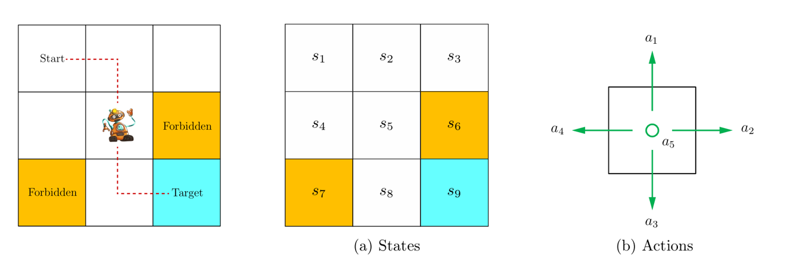
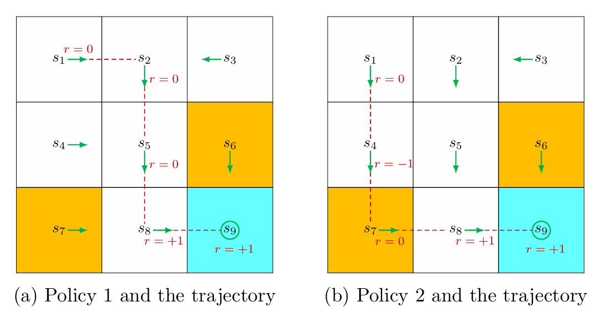

基本概念
状态，动作，奖励

-
State（状态）：环境在某一时刻的描述，包含智能体决策所需的所有相关信息。所有 state 构成的集合为 state space，记为 S。
-
Action（动作）：智能体在某个状态 s 下可以采取的操作，记为 A(s)，其中 s∈S。动作会改变环境状态。
-
Reward（奖励）：智能体执行动作后，环境返回的即时标量信号，用于评价该动作的好坏。智能体的目标是最大化累积奖励（回报）。在状态 s 下采取 a 动作所得到的 reward 记为 R(s,a)，其中 s∈S,a∈A(s)。
以机器人 grid world 为例，每个方格对应一个 state；在每个方格可以采取 5 个 action，分别为向上、向右、向下、向左和不动 5 个移动情况；在每个 state 下采取每一种 action 都有一个对应的 reward，这里定义为 rbound=rforbidden=−1，rtarget=+1，relse=0。
在状态 s 采取动作 a 后转移到状态 s′ 的概率为 p(s′∣s,a)，同时获得奖励 r 的概率为 p(r∣s,a)，这些属于环境的固有属性。
策略
**Policy（策略）**定义了智能体在每个状态下应该采取什么动作，记作 π。分为确定性策略和随机策略：
- 确定性策略：在状态 s 下，只能采取唯一的动作 a，记作 π(s)=a。
- 随机策略：在状态 s 下，采取动作 a 的概率，记作 π(a∣s)=P(A=a∣S=s)。
环境 VS 智能体
- 环境是智能体交互的外部系统，其特性在问题设定时就已经固定（或需要智能体去学习）。环境决定了：状态空间 S，动作空间 A，状态转移概率 P(s′∣s,a)，奖励函数 r(s,a)，终止条件等。
- 智能体是学习的主体，其行为和学习机制完全由设计者或算法决定：策略 π(a∣s)，学习算法，价值函数 V(s) 或 Q(s,a)（智能体内部维护的对未来回报的预测。这些估计不是环境给定的，而是通过学习得到的），折扣因子 γ，探索策略等。
轨迹，回报，折扣

智能体与环境交互产生的一个状态-动作-奖励序列称为一个 trajectory（轨迹），其完整记录了一次从开始到结束（或截断到某个时间步）的交互过程。
例如上图 (a)，在当前策略下从 s1 出发的 trajectory 为 s1a2r=0s2a3r=0s5a3r=0s8a2r=+1s9。
**Return（回报）**记录了沿着一个 trajectory 获得的累计折扣奖励，其衡量了一条轨迹（或从某状态开始）的“总收益”。
上图 (a) 从 s1 出发的 trajectory 的回报为 return=0+0+0+1=1。
一个 trajectory 可以是有限也可以是无限的，相应地 return 可以是有穷大也可以是无穷大的。例如若有无限轨迹 s1a2r=0s2a3r=0s5a3r=0s8a2r=+1s9a5r=+1s9a5r=+1s9a5r=+1s9…（到达终点后每次采取原地不动的动作），则其回报为 return=0+0+0+1+1+1+⋯=∞。因此为了更好地衡量这种情况下的 return，引入discount rate（折扣因子） γ∈[0,1] 来平衡当前与未来奖励。此时的折扣回报就为 discounted return=0+γ0+γ20+γ31+γ41+γ51+⋯=γ31−γ1，是收敛的。
MDP
马尔可夫性
下一状态 s′ 和奖励 r 只依赖于当前状态 s 和当前动作 a，与历史无关。Markov property 也即 memoryless property。数学上表示为：
p(st+1∣at+1,st,…,a1,s0)=p(st+1∣at+1,st)p(rt+1∣at+1,st,…,a1,s0)=p(rt+1∣at+1,st)
马尔可夫决策过程（MDP）
马尔可夫决策过程（Markov Decision Process, MDP） 是强化学习的数学框架，用于描述智能体与环境交互的序列决策问题。
一个 MDP 由五元组 (S,A,P,R,γ) 定义：
- S：状态空间（所有可能的状态）
- A：动作空间（所有可能的动作）
- P：状态转移概率 P(s′∣s,a)，表示在状态 s 执行动作 a 后转移到 s′ 的概率。
- R：奖励函数 R(s,a,s′) 或 R(s,a)。
- γ：折扣因子 ∈[0,1]，平衡当前与未来奖励。
马尔可夫决策过程体现在马尔可夫性（memoryless）、决策（policy）和转移过程（状态转移和奖励）。